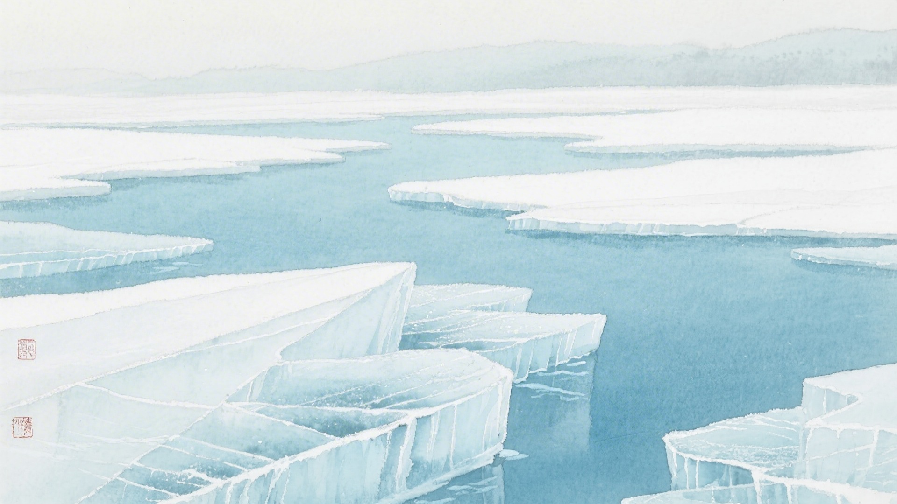
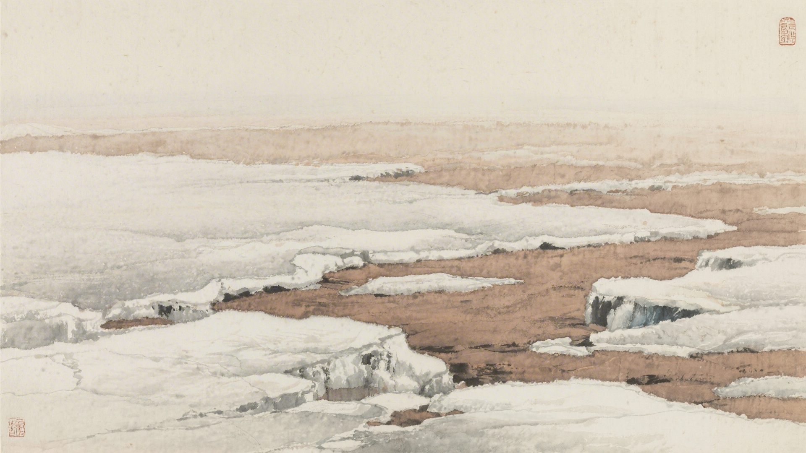
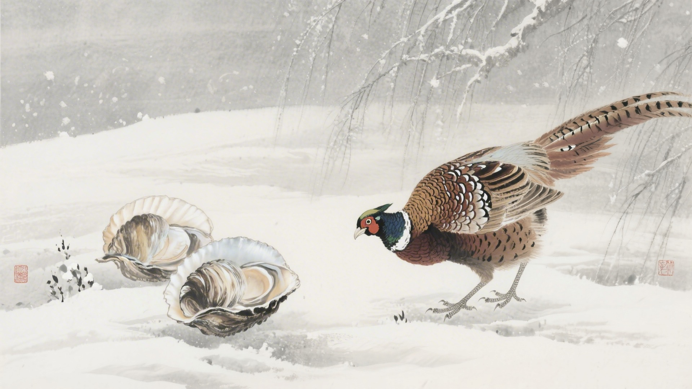
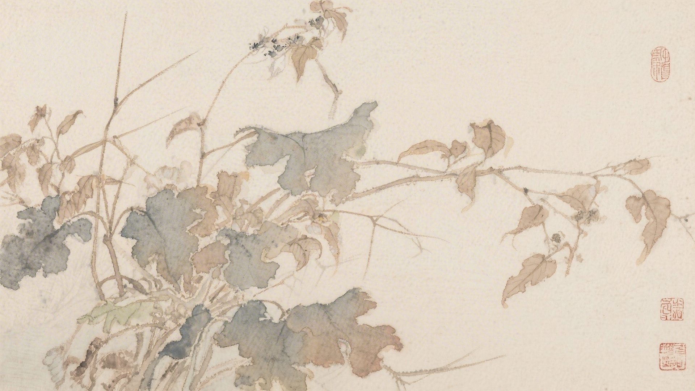
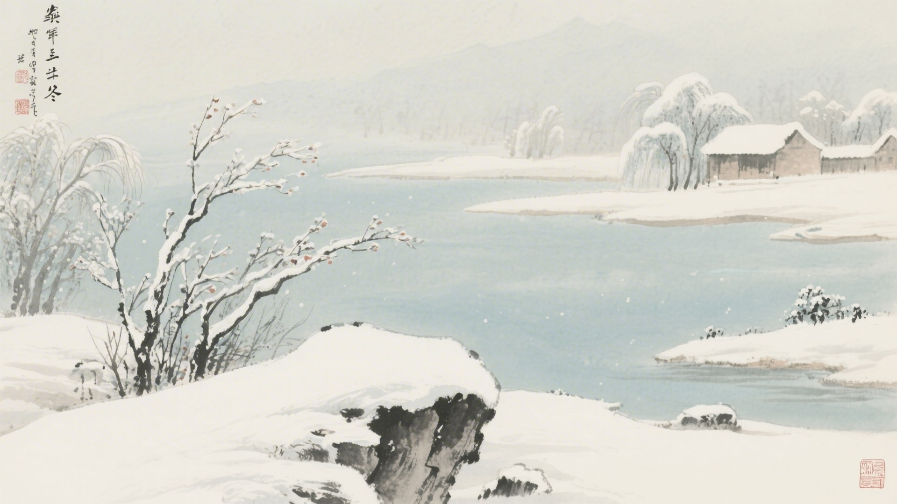

《中国传统色：故宫里的色彩美学》一书中为什么把下面这些颜色归入立冬节气？
半见、女贞黄、绢纨、姜黄
葱犗、二绿、铜青、石绿
黄琮、茶色、伽罗、苍艾
藕丝褐、葡萄褐、苏方、福色
立冬来了，水开始结冰，土地开始冻硬，野鸡不见了，大蛤蜊出现了。古人说立冬有三候：水始冰，地始冻，雉入大水为蜃。这十六种颜色，便从这三候里来。
立冬的"立"，是开始的意思。冬天从这天开始，虽然还没那么冷，但风已经变了。颜色也跟着变，从秋天的斑斓变成冬天的深沉。
对应：立冬节气一候"水始冰"的起、承、转、合四色。
色彩意象：水面结冰，冬意初现。
从淡黄到深黄，是水面结冰的色彩变化，也是立冬时节最轻柔的过渡。

对应：立冬节气二候"地始冻"的起、承、转、合四色。
色彩意象：土地冻硬，草木凋零。
从青绿到深绿，是土地冻硬的色彩变化，也是立冬时节最深沉的底色。

对应：立冬节气三候"雉入大水为蜃"的起、承、转、合四色（其一）。
色彩意象：野鸡化蛤，神秘变幻。
从黄色到青灰，是野鸡化蛤的色彩变化，也是立冬时节最神秘的传说。

对应：立冬节气三候"雉入大水为蜃"的起、承、转、合四色（其二）。
色彩意象：冬日渐深，色彩内敛。
从淡褐到深红，是冬日渐深的色彩变化，也是立冬时节最内敛的画面。

立冬这天，北方有吃饺子的习俗。饺子像耳朵，吃了耳朵不冻。颜色也跟着吃，红的吃进肚子里，黄的吃进肚子里，暖暖和和地过冬。

颜色也懂得藏。它们把秋天的斑斓藏起来，把冬天的素净拿出来。像是要冬眠，先吃饱了，再躲起来睡大觉。等春天来了，再醒来。
（以上解读不代表原书观点）